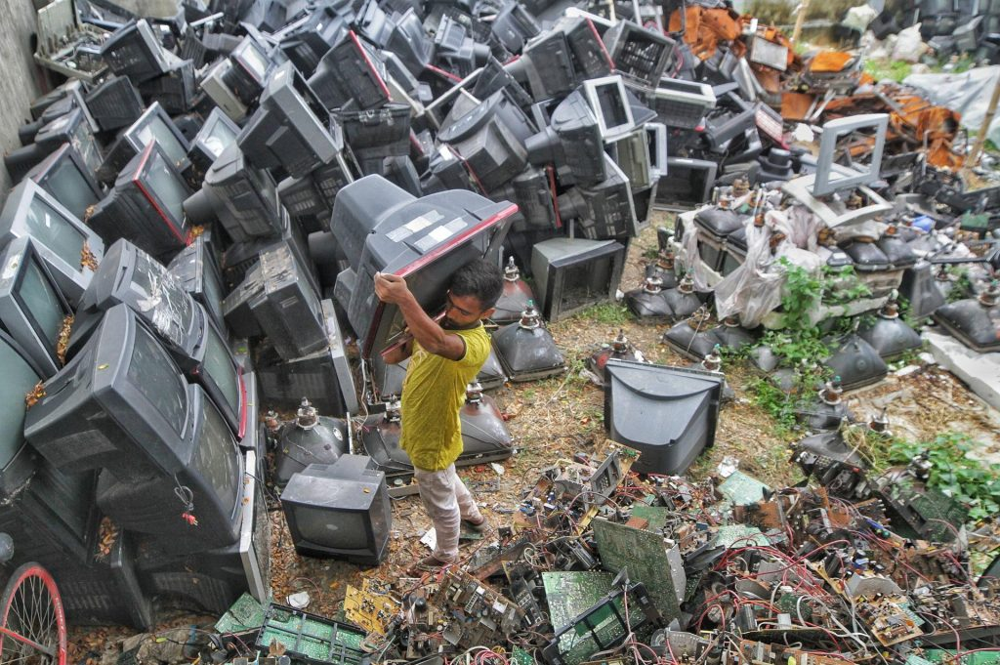

Lixo Eletrônico
Responsabilidades do consumidor
Responsabilidades ao Descartar Lixo Eletrônico: Contribuindo para um Futuro Sustentável
O descarte adequado de lixo eletrônico é uma responsabilidade que todos nós compartilhamos na era digital. À medida que
atualizamos nossos dispositivos eletrônicos para versões mais recentes e tecnologicamente avançadas, é crucial considerar
o destino adequado dos aparelhos antigos. Aqui estão algumas responsabilidades importantes que devemos ter em mente ao descartar lixo eletrônico:
Proteção Ambiental: Dispositivos eletrônicos contêm uma variedade de materiais nocivos, como metais pesados e
produtos químicos tóxicos. Descartá-los de forma inadequada, como jogá-los no lixo comum ou queimá-los, pode resultar na
liberação dessas substâncias nocivas no meio ambiente, contaminando o solo, a água e o ar. Assim, é nossa responsabilidade
garantir que o lixo eletrônico seja reciclado ou descartado em instalações apropriadas, onde possa ser tratado de forma segura
e ambientalmente responsável.
Segurança de Dados: Antes de descartar qualquer dispositivo eletrônico, é essencial garantir que todos os dados pessoais
e confidenciais sejam permanentemente removidos. Isso pode ser feito realizando uma restauração de fábrica ou usando software
especializado para apagar completamente os dados do dispositivo. A proteção da privacidade e da segurança dos dados é uma
responsabilidade crucial ao descartar lixo eletrônico, para evitar que informações sensíveis caiam em mãos erradas.
Conscientização sobre Reciclagem: A reciclagem de lixo eletrônico é uma maneira eficaz de reduzir o impacto ambiental
e conservar os recursos naturais. É importante estar ciente das opções de reciclagem disponíveis em sua comunidade e tomar
medidas para utilizar esses recursos. Isso pode incluir a entrega de dispositivos eletrônicos obsoletos em pontos de coleta
designados, participação em programas de reciclagem promovidos por organizações locais ou o envio de dispositivos para programas
de reciclagem oferecidos por fabricantes ou varejistas de eletrônicos.
Promoção da Reutilização: Antes de descartar um dispositivo eletrônico, é útil considerar se ele pode ser reutilizado
ou doado. Mesmo que um dispositivo esteja desatualizado para suas próprias necessidades, ele ainda pode ser útil para outras
pessoas ou organizações. Doar dispositivos eletrônicos funcionais para instituições de caridade, escolas ou programas de
reciclagem pode prolongar sua vida útil e reduzir a quantidade de lixo eletrônico que acaba em aterros sanitários.
Educação e Conscientização: A conscientização sobre os impactos negativos do descarte inadequado de lixo eletrônico
é fundamental para promover práticas mais responsáveis. Educar a si mesmo e aos outros sobre os perigos da poluição eletrônica,
as opções de reciclagem disponíveis e as medidas que podem ser tomadas para reduzir o desperdício eletrônico é uma
responsabilidade compartilhada por todos nós.
Ao cumprir essas responsabilidades ao descartar lixo eletrônico, estamos contribuindo para um futuro mais sustentável
e saudável para as gerações futuras. Cada ação individual conta e pode fazer a diferença na preservação do meio ambiente
e na proteção da saúde humana.
